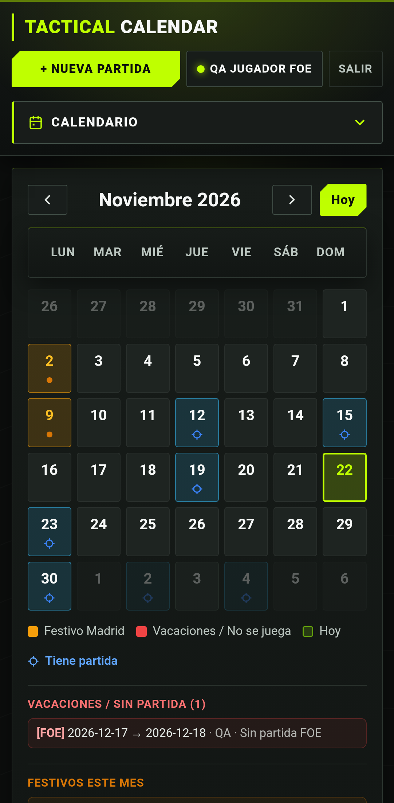
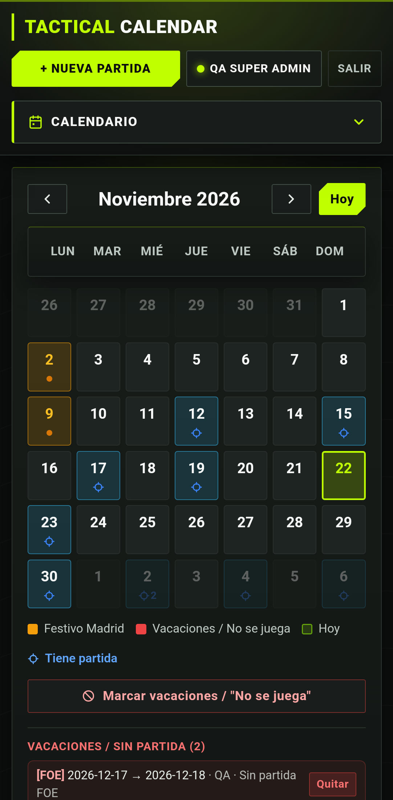
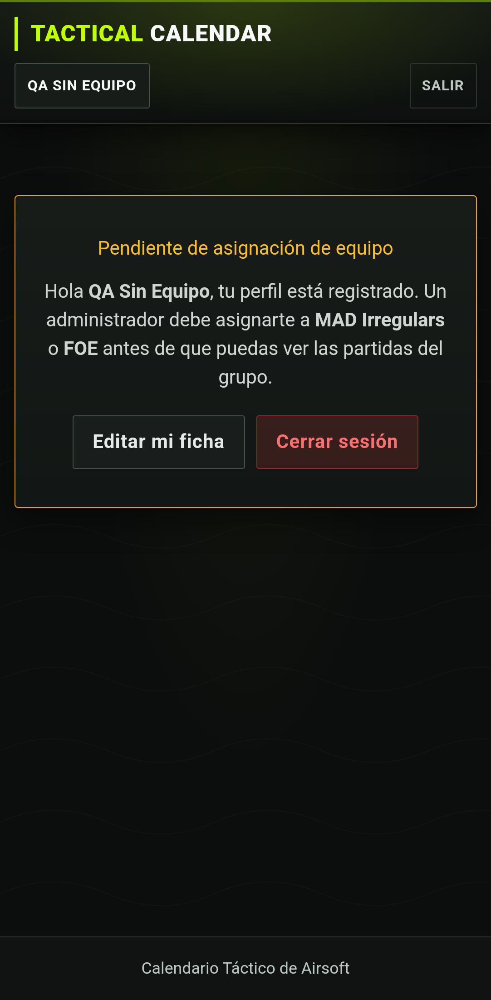
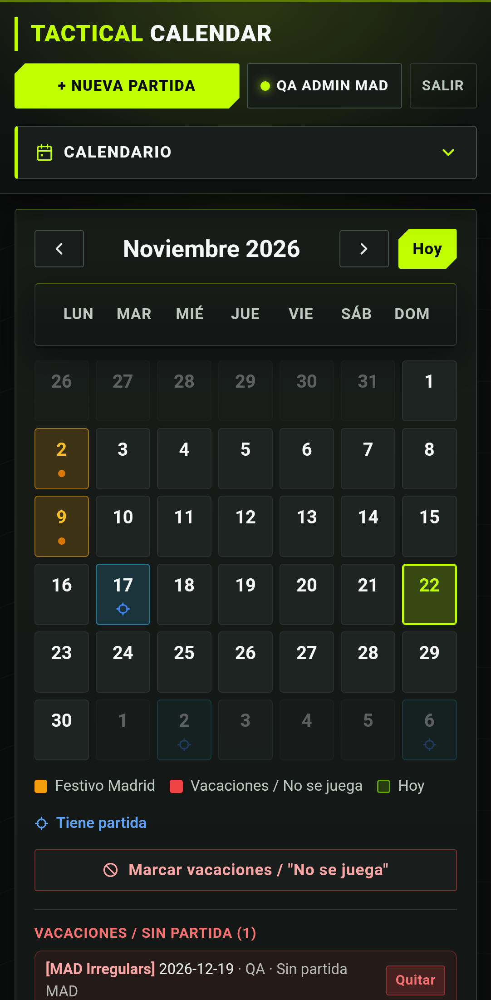
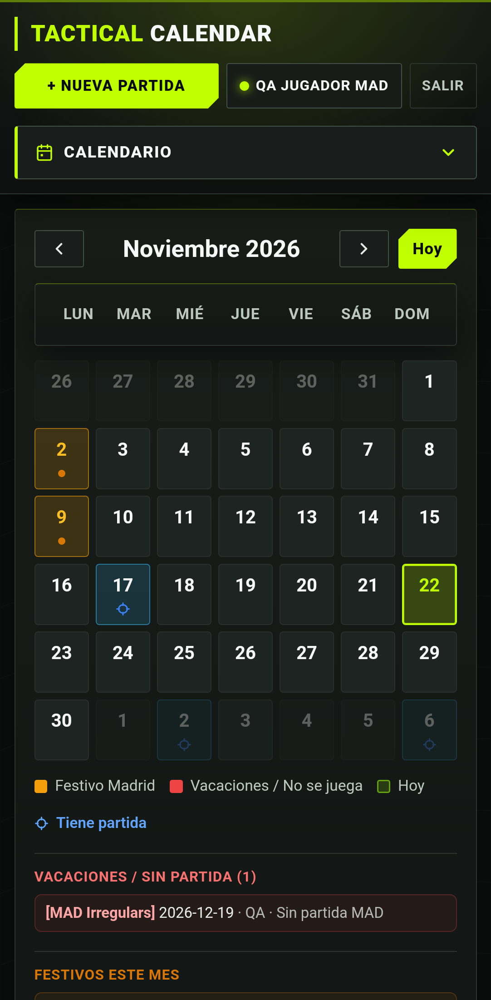

Informe de Appium (app Android)
Suite j-demo-fallos · tactical-calendar · 23/11/2026, 0:59:53 · 69.8 s
0%Tasa de éxito (0 de 7)
0Pasan
7Fallan
0Omitidos
Entorno
- Dispositivo
- sdk_gphone64_x86_64 (emulador)
- Android
- 14
- Modo
- App Android (com.tacticalcalendar.app) dentro de su WebView
- Driver
- Appium 2 · UiAutomator2 · WebdriverIO
- Destino
- Staging de Tactical Calendar (nunca producción)
| Falla | TC-J01 El jugador MAD ve las partidas del equipo FOE (requisito inexistente) App Android Expect $(`//*[contains(normalize-space(.), 'QA FOE · Partida próxima')][not(.//*[contains(normalize-space(.... to be displayed Expected: "displayed" Received: "not displayed" |
11.8 s |
| Falla | TC-J02 El jugador FOE ve las partidas del equipo MAD (requisito inexistente) App Android  Expect $(`//*[contains(normalize-space(.), 'QA MAD · Partida próxima')][not(.//*[contains(normalize-space(.... to be displayed Expected: "displayed" Received: "not displayed" |
10.1 s |
| Falla | TC-J03 El super admin dispone de un panel de métricas App Android  Expect $(`//*[self::h1 or self::h2 or self::h3 or self::h4][normalize-space(.)='Panel de métricas']`) to be displayed Expected: "displayed" Received: "not displayed" |
10.2 s |
| Falla | TC-J04 El jugador sin equipo puede crear partidas App Android  Expect $(`//button[normalize-space(.)='Crear partida']`) to be displayed Expected: "displayed" Received: "not displayed" |
10.1 s |
| Falla | TC-J05 El jugador bloqueado sigue viendo el calendario de su equipo App Android  Expect $(`//*[contains(normalize-space(.), 'QA MAD · Partida próxima')][not(.//*[contains(normalize-space(.... to be displayed Expected: "displayed" Received: "not displayed" |
9.4 s |
| Falla | TC-J06 El admin MAD tiene una pestaña de Facturación App Android  Expect $(`//button[normalize-space(.)='Facturación']`) to be displayed Expected: "displayed" Received: "not displayed" |
9.0 s |
| Falla | TC-J07 El jugador MAD puede exportar el calendario a PDF App Android  Expect $(`//button[normalize-space(.)='Exportar calendario (PDF)']`) to be displayed Expected: "displayed" Received: "not displayed" |
9.2 s |